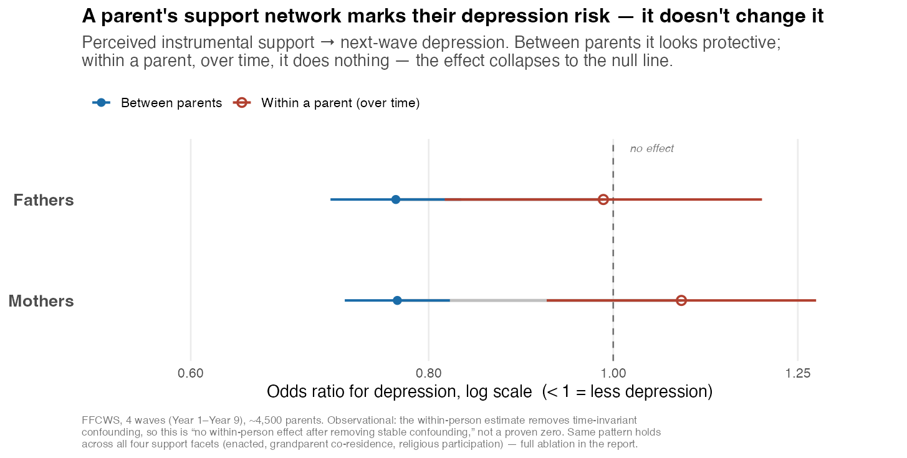

Cause or Signature? · Fragile Families & Child Wellbeing Study
When a parent has people to lean on — someone to lend $200, offer a place to stay, watch the kids in a pinch — are they protected from depression? Or do low support and depression simply travel together because both flow from a shared, stable vulnerability?

A between-person correlation is cheap: parents with more support differ in a hundred stable ways that also affect depression. The finding survives a ladder of tests, each closing the loophole the one before it leaves open — and the latent depression-trajectory classes never enter the ladder, so the causal verdict doesn’t depend on the clustering.
Within-person (fixed-effects)
Each parent is their own control — removes every time-invariant confounder (genes, upbringing, stable disposition) without having to measure it. The effect vanishes.
E-value sensitivity
The between-person association is fragile: only a modest unmeasured confounder would be needed to explain it away entirely.
Cross-lagged reverse test
It isn’t reverse causation either — depression doesn’t erode future support within a parent. Both arrows are null within persons.
Terminal new-onset subgroup
Even among low-vulnerability, previously-well parents — the slice where “a village mends them” is most likely true — support doesn’t prevent new-onset depression.
Persistent parental depression is vulnerability-driven. Social support is a signature of that vulnerability — a marker of who is at risk — not a lever that moves it. The same pattern holds across all four support facets (perceived, enacted, grandparent co-residence, religious participation), for mothers and fathers alike.